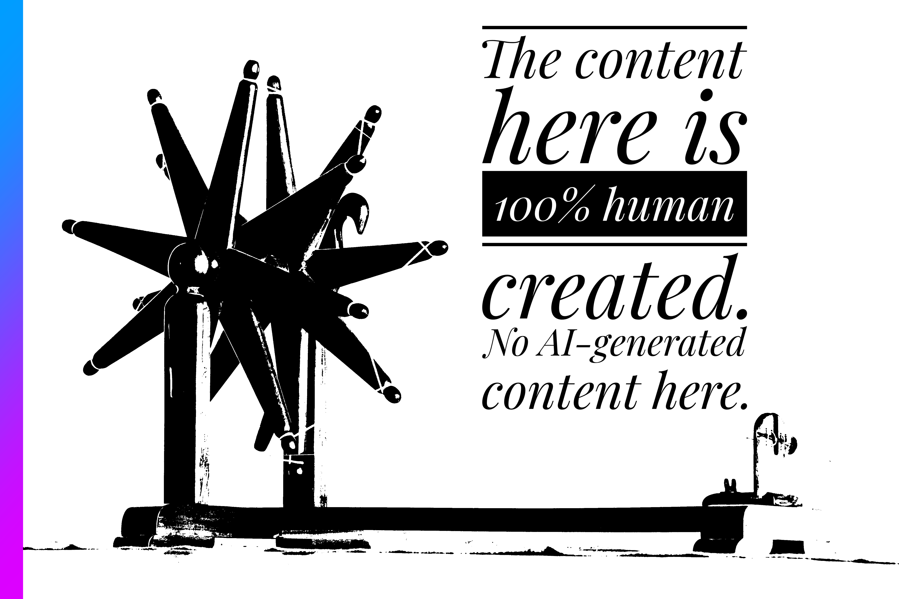

Solving First Order Differential Equations with Julia
Image by Pete Linforth from Pixabay
Introduction
In this tutorial, we will learn about solving Differential Equations with Julia. Differential Equations are everywhere in Science and Engineering problems. And, being able to solve Differential Equations using computers is very convenient. We will use the DifferentialEquations.jl package for solving Differential Equations.
Who is this for
This is for people who are already familiar with Differential Equations from Mathematics, and who can code, preferably in Julia. Only the very basics of Julia langauge is required. If you are unfamiliar with Julia, and yet you have non-trivial experience with any of Python, C/C++, Ruby, JavaScript, golang, etc., you are fine, and you can follow along.
What we will do
In this tutorial, we will only focus on using the high level API of the DifferentialEquations.jl package, and we will learn, from scratch, how to translate first order Differential Equations to Julia, and how to solve them using the library. We will not learn about and code up numerical methods of solving Differential Equations such as Euler’s method, Runge-Kutta methods, etc. Neither we will talk about testing for accuracy, testing convergence of our algorithms. We will simply and plainly have some DEs in our familiar mathematical notation, and then translate them to a form Julia and the library can understand, and then we call high level APIs of the DifferentialEquations.jl library to solve our DEs. That’s it.
And for this post, we are limiting ourselves to First Order Differential Equations.
What are Differential Equations: a very quick recap
“Normal” Equations
Let’s take a step back and discuss normal equations first. Normal equations are equations involving one or more unknown roots. Like this:
\[x^2 - 3x - 18 = 0\]
And you solve this equation for two values of \(x\), since this equation is quadratic.
How do you create this equation? You formulate an equation from a real-world scenario. Here’s an example, from which you will get the above equation:
A farmer is designing a rectangular vegetable garden. The length of the garden is 3 meters longer than its width. The total area of the garden is 18 square meters. How long are the sides of this garden?
This is how the equation is created: \(x(x+3) = 18\), where \(x\) is the length of the smaller side of the garden.
Differential Equations
In normal equations, we solve the equation to find out values of variables previously unknown to us. In case of Differential Equations, we solve to find out functions previously unknown to us.
For normal equations, we find out a relation of the unknown variable with something known to us, concretely.
In DEs, we know how an unknown functions changes with time, or another variable. We form our equation with this derivative of an unknown function, and it’s derivatives- one or more.
It might look like this:
\[\dfrac{dy}{dx} = -y\]
Differential Equations are used to model real-world happenings, and we aim to solve for that function.
Forming a Differential Equation is only possible when there is a function that changes with another variable, let’s say, time. It is not enough for the output of a function to differ with time, it is also necessary that the function itself changes with time.
Here are some examples:
- An ideal candle burns at a constant rate, i.e. the rate of burning of wax is the same when the candle is in its full length, as well as when it is nearly finished. But, the growth rate of population is not the same when the population is low as well as when it is hight. Not population itself increases as population increases, but the rate of increase of population also increases with growing population. (Here I am talking about human population in modern age- with the absence of a natural predator, exceptionally good medical facilities, etc.)
- Another example I can think of is the water emission rate of a hole that is used to empty a water tank. When the water tank is nearly full, the rate of emission of water from the hole is very high, but when the tank is almost empty, the rate of water emission is much lower.
- When you have just made coffee, and say it’s temperature is \(70 ^\circ C\), and your surrounding temperature is \(8 ^\circ C\), the time taken by the coffee to reach \(30 ^\circ C\) is much lower than the time it takes to reach \(8 ^\circ C\) from \(12 ^\circ C\). The process of cooling is slower when the temperature difference is lower compared to when the temperature difference is larger.
These are the situations that you model using Differential Equations.
Numerical Solutions of Differential Equations
There are some situations where finding the exact solution to a Differential Equaion is not possible, or is impractical. This is why we try to find approximate solution. In many situations, this is good enough. When an analytical solution is impossible, numerical olutions is all we have.
What we expect here
For the Differential Equations that we will implement here, and will solve numerically, we will see a graph that will predict the behaviour of the unknown function.
First Example: Radioactive Decay
Radioactivity is the phenomena in which an unstable nucleus loses energy by radiation.
In radioactive decay, if a sample of radioactive nucleus is kept, through several kinds of radiation, the original sample reduces in mass. If there were \(n\) number of nuclei originally, after a certain amount of time, there would be \(p\) number of nuclei, where \(p < n\).
We know that the amount of decay is directly proportional to the number of nuclei present in a sample.
\[ \begin{align} -\dfrac{dN}{dt} &\propto N \\ \implies -\dfrac{dN}{dt} &= \lambda N \end{align} \]
The sign is negative, because, the rate decreases with decreasing number of nuclei.
We will reframe this equation so that we can implement the equation in Julia, and solve it using the solver.
\[ \begin{align} &-\dfrac{dN}{dt} \propto N \\ &\implies -\dfrac{dN}{dt} = \lambda N \\ &\implies \dfrac{dN}{N} = -\lambda dt \end{align} \]
Julia package DifferentialEquations.jl expects functions to be in this format-
Where du is the first derivative, u is the function, t is the timespan for which we want the function’s output, and p is the parameter, or a set of parameters.
From here, we can frame du to be du[1] = -lambda * u[1].
Importing Packages
Function Definition
Declaring Parameters
Defining the ODE Problem
Solving and Plotting the Solution
Second Example: Newton’s Law of Cooling
As we have seen in an example before, we know that something cools much faster when the difference between the temperature of that object and the surrounding temperature is comparatively higher. When the difference is lower, it takes a higher amount of time to cool down.
The problem was quantified by Isaac Newton himself. Let’s understand it.
The temperature of an object, \(T\) varies with time, \(t\), and it depends on the difference of the temperature of the object and its surroundings- the ambient temperature \(T_a\).
\[ \begin{align} \dfrac{dT}{dt} &\propto (T - T_a) \\ \implies \dfrac{dT}{dt} &= k(T - T_a) \end{align} \]
where \(k\) is a constant of proportionality, the value of which depends on the material.
Now we will implement this DE in Julia, and solve it using DifferentialEquations.jl library.
Function Definition
Expected format-
Where du is the first derivative, u is the function, t is the timespan for which we want the function’s output, and p is the parameter, or a set of parameters.
Here, we are using in-place updating to define du because it is memory efficient, and will be a crucial where there is a system of Differential Equations present.
Here we have two parameters- k and T_a, and they are related as \(T_1 = k \times (T_0 - T_a)\). That is what we implement on line 3 of the function definition.
Declaring Parameters
T = [80.0] # Temperature of object
k = -0.06 # k, the cooling constant, negative, because cooling
T_a = 20.0 # the ambient temperature
tspan = (0.0, 300.0) # time-period for which we want to tract the values of the function, i.e. temperature of the object
p = (k, T_a) # defining a tuple of parameters as expected by the libraryDefining the ODE Problem
Here we define the ODEProblem as required by the solver package.
Solving the ODE
We see very clearly how the value of the function \(T\) changes with time.
Conclusion
We have seen the very basics and intuitive explanation of First Order Differential Equations, and learned about how DifferentialEquations.jl solves DEs, and how to frame DEs according to the format expected by that library.
Acknowledgements
I learned a lot about the content of this tutorial from- some amazing teachers that I had in college, and some amazing textbooks like Mathematical Methods for Physics and Engineering by Riley, Hobson, Bence and Mathematical Methods for Physicists by Arfken, Weber, Harris. I learned about the DE solver package from many content from the creator: Chris Rackauckas, and some example videos from this YouTube channel- doggo dot jl.
Discuss
If you have read this post, and found it interesting or edifying, please let me know. I would like that very much. If you have any criticism, suggestion, or want to tell me anything, just add a comment or let me know privately. Discuss this post on Fediverse, Hacker News, or Twitter/X.

Cite this Article
@ONLINE {,
author = "Ritobrata Ghosh",
title = "Solving First Order Differential Equations with Julia",
month = "mar",
year = "2025",
url = "https://ritog.github.io/posts/1st-order-DE-julia/1st_order_DE_julia.html"
}